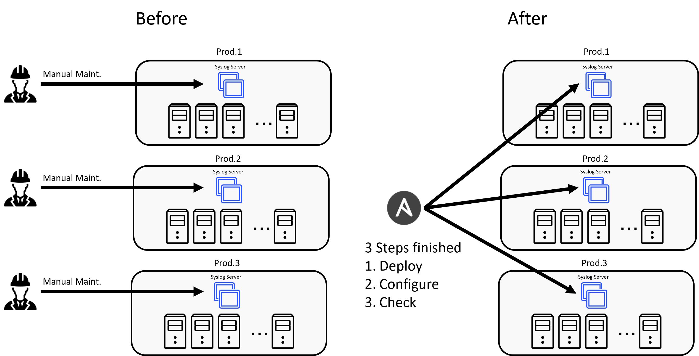
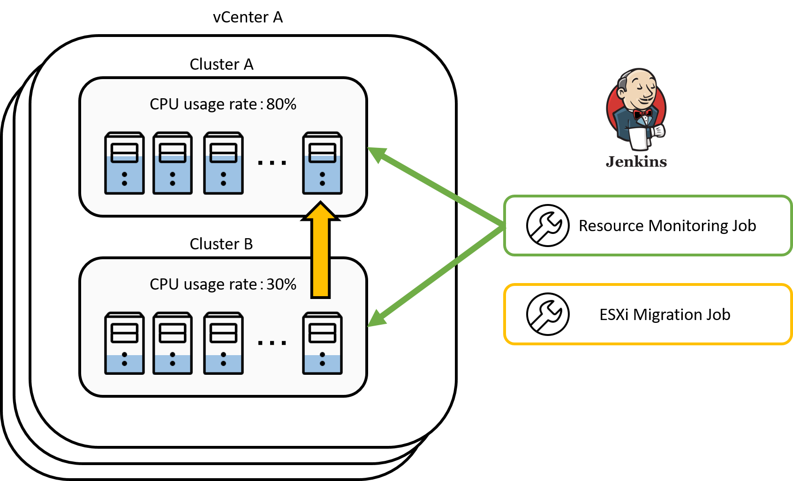
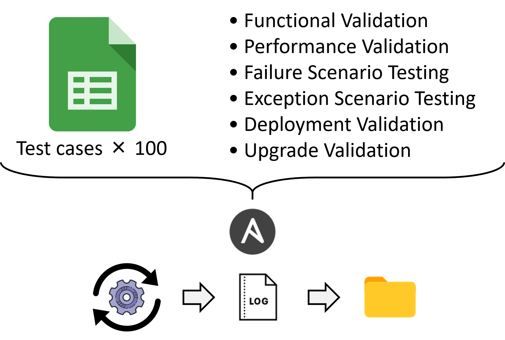
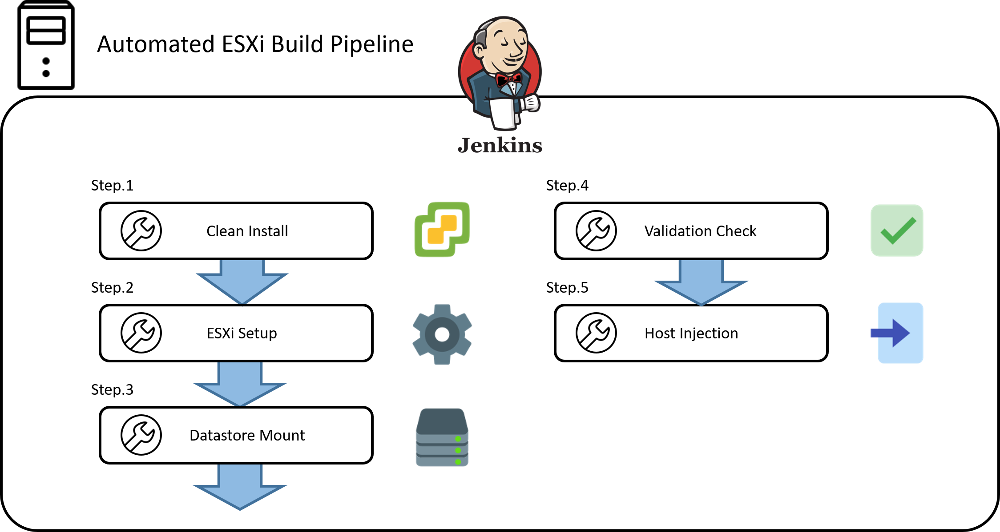

Syslogの構築自動化により、ログ分析基盤の統一と保守性向上を実現

ESXiサーバのログは日次でローテートされるため、障害発生時の詳細な原因追跡が困難という課題がありました。加えて、多数のSyslog VMがサポート切れのOSで稼働しており、セキュリティ上のリスクも抱えていました。
この状況を解決するため、Ansibleを用いてSyslog VMのデプロイ、OS設定、正常性確認に至るまでの一連のプロセスを自動化しました。この仕組みにより、数十台規模のVM群を迅速かつ一括で、常に最新の状態へ更新できる体制を構築しました。
結果として、全サーバのログを永続的に保管・分析する基盤が整い、障害対応の精度と速度が大幅に向上しました。同時に、OSのバージョンを常に最新に保つ運用が実現したことで、セキュリティリスクを抜本的に低減し、システムの保守性と安全性を飛躍的に高めることに成功しました。
数千台のESXiホストを一元管理するシステムを開発し、最適なリソース配置を自動化

数千台規模の仮想化環境において、ハードウェア障害時のリソース不足によるサービス停止が潜在的なリスクでした。また、リソース配分の最適化は一部の専門担当者の経験知に依存しており、作業の属人化と非効率性が課題でした。
この課題に対し、全ホストのCPU・メモリ使用率や統合率といった主要なKPIを常時監視し、リソースの逼迫リスクを予測するシステムを開発しました。さらに、リソースが不足した環境に対し、供給元の候補を自動で選定・推奨するアルゴリズムを実装。これにより、従来は高度な判断を要したリソースの最適配置を自動化しました。
本システムの導入により、インフラ全体の可用性が大きく向上。加えて、専門知識への依存から脱却し、誰でも最適なリソース管理を行える体制を確立しました。結果として、この運用に費やされていた年間5人月の工数を0.5人月へと、実に90%もの削減に成功しました。
アップグレード前検証を完全自動化し、現場の作業負荷とリスクを軽減

vCenter/ESXiのアップグレードは、基幹インフラの安定稼働を左右する重要な作業です。従来、数百項目に及ぶ動作検証を手作業で行っており、3人月という膨大な工数と、ヒューマンエラーによる見落としのリスクが大きな課題でした。
そこで、Ansibleを活用したテスト自動化フレームワークを設計・構築しました。この仕組みは、数百のテストケースを自動で実行するだけでなく、全項目の試験結果と操作ログを証跡として自動的に記録・保存します。これにより、人手を介さない一貫した品質での検証と、完全なトレーサビリティを両立させました。
この自動化により、検証作業の工数を3人月から0.5人月へと約83%削減しただけでなく、作業品質の標準化と信頼性の向上を実現。アップグレードに伴うリスクを大幅に低減し、より迅速かつ安全なインフラ更新サイクルを確立しました。
ESXiホスト構築フローを完全自動化し、構築スピードの向上と現場の作業負荷を軽減

従来のESXiホスト構築プロセスは、多数のツール実行と手作業が混在し、手順が分断されていました。このため、1台の構築に6時間を要し、パラメータの誤入力や手順の抜け漏れといったヒューマンエラーが発生しやすく、迅速性と信頼性の観点で課題がありました。
この課題を根本から解決するため、点在していた各種ツールや手作業のプロセスを一つのパイプラインとして統合し、ホスト構築をエンドツーエンドで自動化する仕組みを設計・実装しました。これにより、一貫性のある高品質な構築を「ワンクリック」で実現するワークフローを確立しました。
このパイプライン化により、1台あたりの構築時間は6時間から2時間へと67%短縮され、インフラの提供速度が飛躍的に向上しました。また、手作業を完全に排除したことで、ヒューマンエラーのリスクを根絶し、構築品質を標準化。結果として、年間約3人月の工数削減を達成し、エンジニアがより付加価値の高い業務に集中できる環境を創出しました。